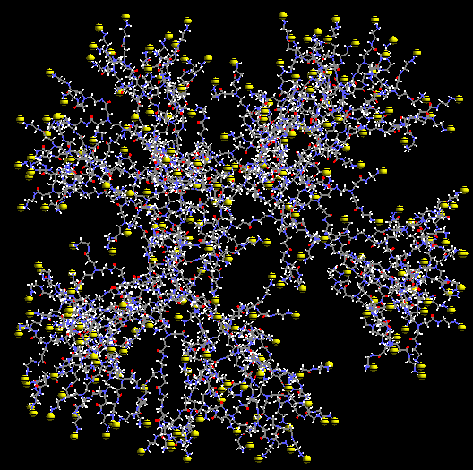

Dendrimers and hyperbranched polymers represent a novel class of structurally
controlled macromolecules derived from a branches-upon-branches structural
motif. Polyfunctional character of dendrimer allows varied response to
environment and promise as selective sensors, carrier for drugs, and encapsulation
of toxic chemicals and metals.. We are developing simulation infrastructure
(force field and algorithms) to study the structure and dynamics and properties
of dendrimers at the nanoscale and microscale regimes.

Cu++ (yellow spheres) binding to generation 6 dendrimer molecules.
Proton (white sphere) binding to generation 4 dendrimer molecules